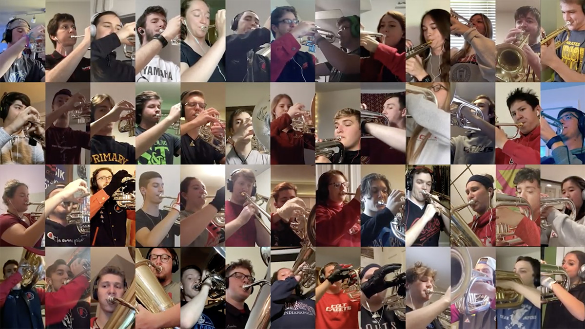

Colts Homeroom Gears Students For Future Success

August 5, 2020
The Colts recently concluded their intensive, 16-week virtual drum corps workout, and the staff could not be more proud with what the students were able to accomplish. Nearly 200 Colts, Colt Cadets, and others interested in improving their skills enrolled in the program. With the Covid-19 pandemic interrupting our typical summer schedule, our staff pivoted immediately to introduce a program that allowed the organization to continue its mission of using “music and excellence to teach each other about success in life.”
Many students shared their reflections from Colts Homeroom:
“Setting goals and sticking to a plan to achieve those goals was an area where I struggled but after (Colts Homeroom), I have experienced the satisfaction of achieving your own objectives.”
“My biggest takeaway from this program is to make smaller goals for smaller increments of time to track progress better and to motivate yourself to keep going for the big goal.”
“1) Finding motivation to do stuff is WAAAAY easier when your friends are around you doing it with you, and 2) it’s okay to fail, as long as you do better next week.”
“My biggest takeaway from this is setting goals can help you achieve so much more…But where I am at now is significant progress from 2-3 months ago!”
“Starting small and growing slowly, I definitely feel like I improved myself not only physically, but mentally by holding myself accountable to a routine.”
“Making sure that you believe in yourself and minimize stress are key to getting things done and seeing improvements.”
“…as I kept working out each week it got easier and became a habit. And I think setting goals for the past three months really helped enforce the habit of staying motivated.”
“My biggest takeaway is to be self-accountable; plan things out and make it happen.”
“I think my biggest takeaway is how it helped me to stay with it even though there may have been some days where I wasn't totally motivated. The important thing is to not give up or you won't meet your overall goal.”
“Thank you all for making me not lazy this summer!!”
Thank you to all of the staff who guided the program, the students who participated, and their parents who kept them on task throughout the summer. A special shout out to Chad Miller and Mike Miller who led the charge on so many occasions.
Now…on to 2021!
Virtual Performances
Watch virtual performances by members of the Colts Homeroom on their YouTube channel:
Virtual Strangers

Virtual Anthem
Virtual America
Return to Colts News.